PROJECTS
NEWS
CONTACT
We are a multi-disciplinary design studio focuses on architecture and landscaping
EXTERIOR DESIGN
IN KOREA
SINCE 1985
한국의 주거 디자인 역사에서 아파트 외관 디자인의 발전을 이끌어온 '솜씨'의 위상은 1985년 이래로 꾸준히 한 길만을 달려온 과정과 결과 물이라 자부합니다.
